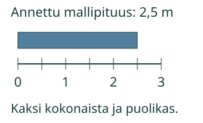
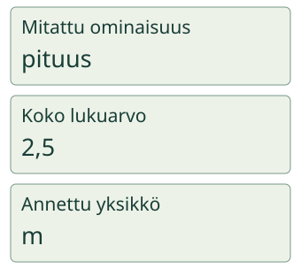

<link rel="stylesheet" href="lesson.css">


<section data-teaching-step="1" data-lesson-role="teaching-step">
<p class="lesson-intro"> Aava tekee mittauslapun. Oikean luvun lisäksi pitää tietää, mitä mitattiin ja missä yksikössä.</p>
<h2>Yksi tulos, kolme yhteen kuuluvaa osaa</h2>
<p><strong>Kokoan suureen, koko lukuarvon ja yksikön samasta lähteestä.</strong> Annettu mallinauha ulottuu nollasta kahteen kokonaiseen metriin ja vielä puoli metriä eteenpäin. Sen pituudeksi on annettu <strong>2,5 m</strong>.</p>
<figure data-lesson-role="worked-example"></figure>
<p>Mitattu ominaisuus eli <strong>suure on pituus</strong>. Koko lukuarvo on <strong>2,5</strong>. Annettu yksikkö on <strong>m</strong>.</p>
</section>


<section data-teaching-step="2" data-lesson-role="teaching-step">
<figure data-lesson-role="worked-example"></figure>
</section>


<section data-teaching-step="3" data-lesson-role="teaching-step">
<h3>Toinen esimerkki: vaa’an merkintä</h3>
<p>Vaa’an mallilukema on <strong>massa 0,4 kg</strong>. Kirjaa suureeksi massa, lukuarvoksi koko 0,4 ja yksiköksi kg. Pelkkä 0 kadottaisi desimaaliosan. Pituus 0,4 m tarkoittaisi eri ominaisuutta.</p>
</section>


<section data-teaching-step="4" data-lesson-role="teaching-step">
<p data-lesson-role="question"><strong>Ennusta:</strong> riittääkö oikea lukuarvo, jos yksikkö on väärä?</p>
<details data-lesson-role="answer"><summary>Katso ajatus</summary><p>Ei. Esimerkiksi 0,4 g ja 0,4 kg ovat eri massoja. Kaikki kolme osaa pitää tarkistaa yhdessä.</p></details>
</section>


<section data-teaching-step="5" data-lesson-role="teaching-step">
<h3>Rakenna lähteestä kokonainen tulos</h3>
<p>Harjoituksen lähde ja yksikköä koskeva ohje näkyvät aina. Lue ne ennen vastaamista. Kun vaihtoehtoiset merkinnät on annettu, voit käyttää kumpaa tahansa kokonaista merkintää.</p>
</section>


<section data-teaching-step="6" data-lesson-role="teaching-step">
<div data-complete-record><p>Ilman moduulia: kirjaa lähteestä ”massa 0,4 kg” suure, koko lukuarvo ja yksikkö. Tarkista sitten kaikki kolme takaisin samaa lähdettä vasten.</p></div>
</section>


<section data-teaching-step="7" data-lesson-role="teaching-step">
<h3>Uusi merkintä: nopeus</h3>
<p>Annettu <strong>v = 6 m/s</strong> tarkoittaa tässä nopeutta. Suure on nopeus, lukuarvo 6 ja yksikkö m/s. Yksikön kaksi kirjainta ja kauttaviiva kuuluvat samaan yksikkömerkintään. Nopeutta ei tarvitse laskea.</p>
</section>


<section data-teaching-step="8" data-lesson-role="teaching-step">
<details data-lesson-role="teaching-step"><summary>Tutki: sama pituus, kaksi merkintää</summary><p>Viiden metrin nauha voidaan merkitä <strong>5 m</strong> tai <strong>500 cm</strong>. Vastaavuus on annettu. Pituus säilyy, kun lukuarvo ja yksikkö vaihtuvat yhdessä. Pelkkä yksikön vaihto 5 m:stä 5 cm:iin muuttaisi pituuden. Kokeile tätä lähdemerkintää harjoituksessa.</p></details>
</section>


<details class="teacher" data-lesson-role="teacher-note"><summary>Opettajalle ja ilman ruutua</summary><p>Vuosiluokat 7–9, kanoninen integration. Vaadittu JA-ryhmä on PHY79-QTY-CONCEPT, PHY79-NUMVALUE ja PHY79-UNIT-CONCEPT. Harjoitus yhdistää ne samaan tulokseen; se ei myönnä tai korvaa atomisia hallintatiloja. Täyteen integraation hallintaan tarvitaan erillinen soveltamisnäyttö. Ei uutta pelin arviointihaaraa tai formaalia henkilönäyttöä.</p><p>Kaikki lukemat ovat annettuja malleja, eivät oppijan mittauksia tai todellisen laitteen suorituksen arvioita. Nauhakuva on kalibroimaton ruutumalli, jonka koordinaatit vastaavat annettua lukemaa. Harjoituksen ohje erottaa annetun merkinnän purkamisen ja kahden annetun samanarvoisen merkinnän rakentamisen. Täysi vastaus vaatii oikean suureen sekä yhteen sopivan lukuarvon ja yksikön; yhden parin oikeellisuus ei riitä.</p><p>Desimaalipilkku ja piste sekä etu- ja loppunollat hyväksytään rajatussa tavallisessa desimaalimuodossa. Kenttä tukee enintään kuutta desimaalia ja 20 merkkiä; tieteellinen merkintä ja ryhmittelyvälilyönnit eivät kuulu tähän syöttimeen. Niitä ei väitetä eri lukuarvoiksi. Vastaavuudet annetaan, eikä onnistumisesta päätellä yksikkömuunnosten, nopeuslaskun tai vapaan mittausraportoinnin hallintaa.</p><p>Suureen tunnus ja yksikkömerkki ratkaistaan asiayhteydestä. m voi olla massan tunnus tai pituuden yksikkö metri; s voi nimetä matkan tai tarkoittaa sekuntia. Tunnusten ulkoasu ei yksin ratkaise tehtävää. Yksikön 1 tunnus jätetään usein pois esimerkiksi taitekertoimen arvosta; kaikissa mahdollisissa suureissa ei tarvitse näkyä erillistä yksikkömerkkiä. Tämän työpohjan lähteissä yksikkö annetaan nimenomaisesti.</p><p>Valittava yksikköjoukko on rajattu. Esimerkiksi g ja kg ovat molemmat massan yksiköitä, mutta saman massan lukuarvo pitää huomioida. °C ja K sopivat lämpötilan ilmaisemiseen, mutta saman lämpötilan lukuarvo ei yleensä ole niissä sama. Pelkän sopivan suurelajin valinta ei korvaa lähteen lukemista.</p><p>Offline: käytä aikuisen kanssa tehtyä mittausta tai valmista lähdemerkintää. Kirjaa kaikki kolme osaa, vaihda lappuja ja tarkista lähde yhdessä. Fyysinen mittaaminen ja riippumaton osaaminen arvioidaan erikseen. Ei henkilöhistoriaa, pysyvän oppimisen tai vaikuttavuuden väitettä. Aikuinen voi lukea, eikä puhetta, esineiden nimeämistä tai ylimääräisiä laskutaputuksia vaadita.</p></details>


<section data-teaching-step="9" data-lesson-role="teaching-step">
<p data-lesson-role="question"><strong>Lopuksi:</strong> miksi oikea luku ei yksin riitä tarkistamaan koko tulosta?</p>
</section>


